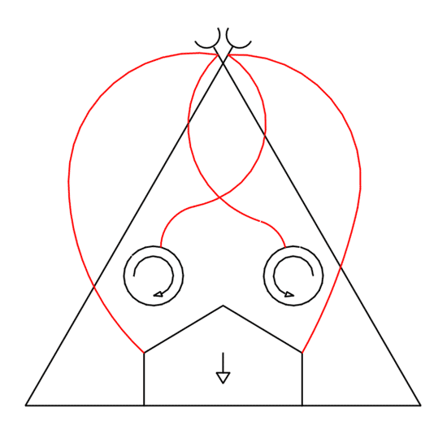
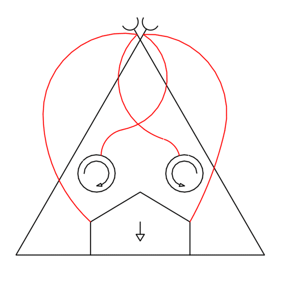
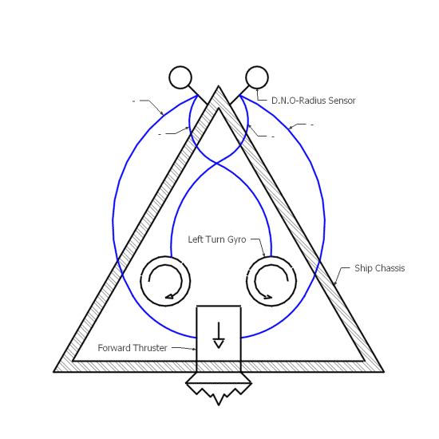
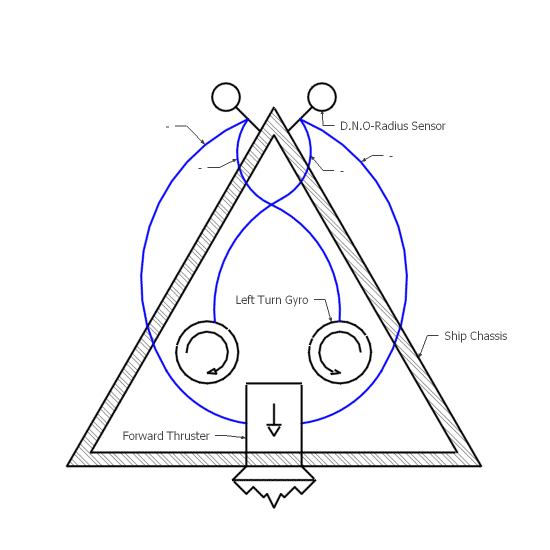

Project Description
Preface
This project uses an unsigned JAR file which may be disallowed by your default Java settings. If you are not presented with a dialog asking for permission to run the Applets on this site, you will have to add an exception to your Java Security settings:
60-Second-Guide to altering your Java Security Settings.
Introduction
Braitenberg Vehicles were created as a thought experiment by Valentino Braitenberg. Braitenberg sought to reveal the mechanisms of the mind with his Vehicles. He did this by combining simple (albeit fantastical) hardware to produce complex behaviors. In his book, Braitenberg develops 14 vehicles, each more sophisticated than the last. Braitenberg's Vehicles develop in turn: instincts, emotions, logic, concepts, ideas, foresight and egotism.
Braitenberg Pilots applies Braitenberg's Vehicle designs to the Asteroids game environment to see if they can effectively survive and achieve a high score in the game (i.e. are they fit for the environment). The goal is to design a very general robot which evolves to suit the environment, not to hand craft the best Asteroids AI possible. ~General-solution ~Evolution
The first few Braitenberg Vehicles described by Braitenberg in his book are reproduced below. These initial Vehicles introduce the components and concepts used in subsequent Vehicles. The Vehicles are introduced, observed and introduced in a style and format similar to the one used by Braitenberg in Vehicles~TITLE.
Vehicle I
Description
Vehicle 1 is equipped with one sensor and one motor.Vehicles p. 3

Radius Sensor
The sensor attached to Vehicle 1 detects objects in a radius extending from the sensor's origin. The sensor reports a normalized distance to the nearest detected object. To simplify implementation, the reported distance is measured from the detected object's origin to the sensor's origin. In this way, the sensor acts as a primitive antenna; focusing on the closest object in its field of detection.
Forward Thruster
Vehicle 1 is also equipped with a thruster capable of propelling the robot forward at varying speeds. The thruster is an example of a Motor component. Motor components receive an input signal and produce some effect.

Chasis
Vehicle 1's sensor is connected to the forward thruster. The forward thruster is depicted as a pentagon with an arrow indicating the exhaust direction. As stimulus excites the sensor, a signal is passed to the thruster. The connection is such that, the closer an object gets, the harder the thruster works. More-more connections like this are depicted in diagrams as red wires (as seen in figure 2).
Observations
Vehicle 1 floats casually at first but when an asteroid approaches, he begins to move forward. If approached from behind, he creeps ahead of the approaching asteroid, only just keeping it at the edge of his senses. If approached from the fore, he rapidly accelerates forward; often shooting himself into the approacher, occasionally slipping past into open space.
Demonstration
Select the Applet and press 'S' to start. Press 'P' to pause the Applet at any time.
Analysis
Vehicle 1 is a simple creature. He loves wide open spaces. Crowded areas agitate him to flight. He is a fickle creature, always searching for a totally empty spot; never happy with almost perfect. He lacks strategy and would rather plough through a dense crowd ahead of him than bear the slightest company or move around it.
Vehicle 2
Description
Vehicle 2 is generally similar to Vehicle 1 except that it has two sensors, one on each side, and two motors, right and left.Vehicles p. 6

Cone Sensor
Vehicle 2 utilizes a Cone Sensor to acheive more focused behavior than is possible with the antenna-like Radius Sensor. Cone Sensors detect objects in a cone extending away from the sensor. Again, the sensor reports the normalized distance to the nearest detected object. The resulting sensor mimics a simple eye; concerned with only the nearest object.
Gyroscope
Vehicle 2 comes equipped with two gyroscopes. Each gyroscope exerts force in the rotational direction indicated by a curved arrow. The gyroscopes rotate their Vehicle whenever they are passed a signal from an attached sensor. Gyroscopes conteract eachother such that if two opposing gyroscopes (one clock-wise and one counter-clockwise) are equally excited, no rotation will occur.
 

{kind=link}
Chasis
Vehicle 2's cone sensors are tilted apart such that their field of view overlaps only slightly. Two significant wiring configurations are possible in this Vehicle. The left-facing sensor may be connected to the left-side gyroscope and the right-sensor with the right gyroscope (a so called uncrossed connection as in figure XXX). Alternatively, the connections may be crossed such that the left-facing sensor is connected with the right-side gyro and the right-facing sensor is connected with the left-side gyro (as in figure XXX). In either case, the thruster is connected to each sensor as in Vehicle 1.
For convenience, the uncrossed configuration will be refered to as Vehicle 2A and the crossed configuration 2B.
Observations
OBSERVATIONS
Demonstration
Select the Applet and press 'S' to start. Press 'P' to pause the Applet at any time.
Analysis
ANALYSIS
Vehicle 3
Description
There is something very crude about a vehicle that can only be excited by the things it smells (or sees or hears) and knows no soothing or relaxing stimuli.Vehicles p. 10
 

{kind=link}
Chasis
Vehicles 3A and 3B are equipped with the same sensors and motors as Vehicles 2A and 2B but with a novel wiring scheme. Vehicle 3's connections are inverted such that; when a sensor is deprived of stimulus (there is nothing to detect) the attached Motor is fired at full capacity. When a sensor is excited, the attached component is inhibited and acts with less force. Such inverted connections are depicted in figure XXX as blue wires.
Observations
OBSERVATIONS
Demonstration
Select the Applet and press 'S' to start. Press 'P' to pause the Applet at any time.
Analysis
ANALYSIS
Vehicle 4
Description
Let us consider the following improvement. The activation of a certain sensor will make the corresponding motor run faster, but only up to a point, where the speed of the motor reaches a maximum. Beyond this point, if the sensor is activated even more strongly, the speed will decrease again.Vehicles p. 15
Modulator
Vehicle 4 introduces Modulators to our wiring schemes. Past connections, inverted or not, assumed a linear relationship between sensor output and motor stimulation. Either, the more-stimulue the more-output or the more-stimulus the less-output. Modulators take a signal from a sensor, input the signal to a function, and return the result. Multiple Sensors can be connected to a single Modulator. In that case, all the Sensor signals will be added together and input to the modulator's function (similar to wiring batteries series to acheive higher voltage). Multiple motors may also be connected to the output of a modulator. Modulators are represented in our figures as a disc labeled f~cursive-symbol~. Modulators allow for a stunning array of behaviours and configurations.

{kind=link}
Chasis
Vehicles 4A and 4B are equipped with the same sensors and motors as Vehicles 3A and 3B. However, Modulators intercept the connections between the Sensors and Motors of these new Vehicles. The Modulators used here are modeled by the curve shown in figure XXX (a parabolic curve of the form f(x)=-4(X^2-X) || MAYBE 4(X^2-X)+1 IS MORE INTERESTING???).
Observations
OBSERVATIONS
Demonstration
Select the Applet and press 'S' to start. Press 'P' to pause the Applet at any time.
Analysis
ANALYSIS
Vehicle 5
Description
The individual threshold device is of the simplest sort: it gives no output if its input line carries a signal below the threshold, and it gives full output beyond the threshold.Vehicles p. 21
Cone Sensor
COMPONENT
Chasis

DESCRIPTION
Observations
OBSERVATIONS
Demonstration
Select the Applet and press 'S' to start. Press 'P' to pause the Applet at any time.
Analysis
ANALYSIS
Evolving New Vehicles
Description of evolutionary algorithms used...
Future Goals
To see some of the future goals for the project visit the Future Goals page.